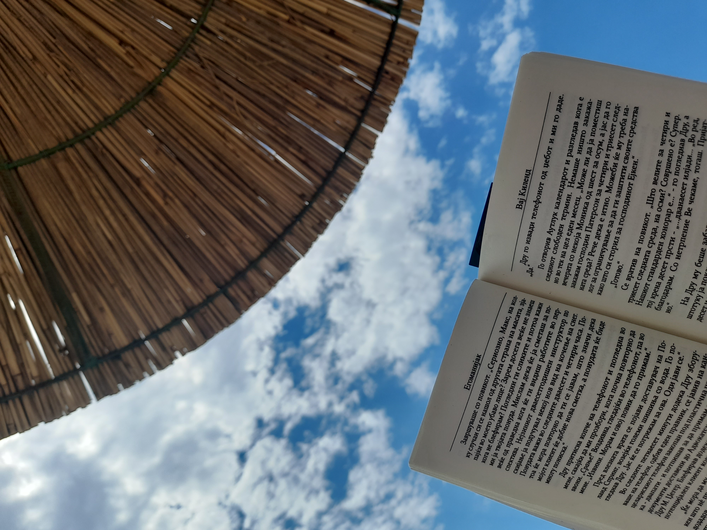
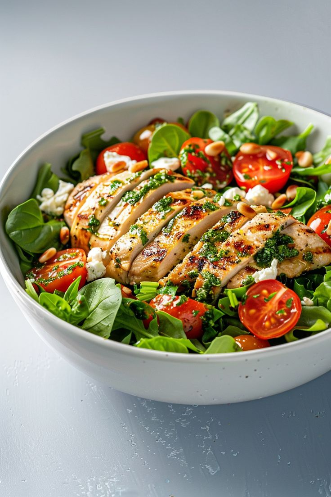
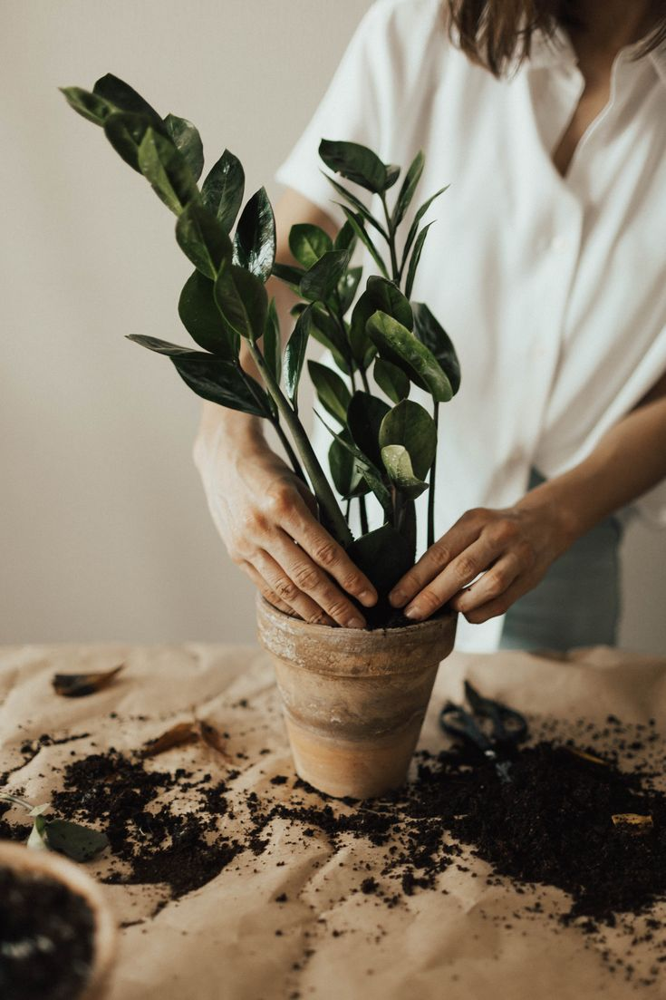

Reading books is my hobby. It lets me explore new worlds and ideas, feeding my curiosity and imagination.

Cooking healthy meals is something I truly enjoy. It allows me to use fresh ingredients, create nutritious dishes, and maintain a balanced diet. The process is both relaxing and rewarding.

Gardening is a hobby that brings me peace and joy. Tending to plants, whether flowers or vegetables, allows me to connect with nature and nurture life.